Zyquo Vault User Manual
Everything you need to know about the local-first, offline, encrypted password manager for macOS.
1Introduction
Zyquo Vault stores your passwords, one-time-code secrets, cards, identities, SSH keys, notes, and files inside an encrypted vault that never leaves your Mac. There is no account to create, no cloud to sync with, and no telemetry — the app has no network permission at all, so it physically cannot send anything anywhere.
Your master password is the only key. It is never stored, never written to disk, and never recoverable by anyone — including the app itself. From it, Zyquo derives encryption keys using Argon2id (a modern, memory-hard algorithm tuned to your machine), and every byte written to disk is encrypted and authenticated with AES-256-GCM: if a file is modified, truncated, swapped, or rolled back, the vault detects it and refuses to proceed rather than showing you tampered data.
2Installation
- Download
ZyquoVault.dmgfrom the latest GitHub release. The disk image is Developer ID signed, notarized by Apple, and stapled — Gatekeeper opens it without warnings. - Open the DMG and drag Zyquo Vault into Applications.
- (Optional but recommended) Verify the download:
and compare with theshasum -a 256 ~/Downloads/ZyquoVault.dmgSHA256SUMSfile attached to the same release. - Launch the app. The first thing you'll ever see is the welcome screen below — no sign-up, no permissions requests, no network prompts.
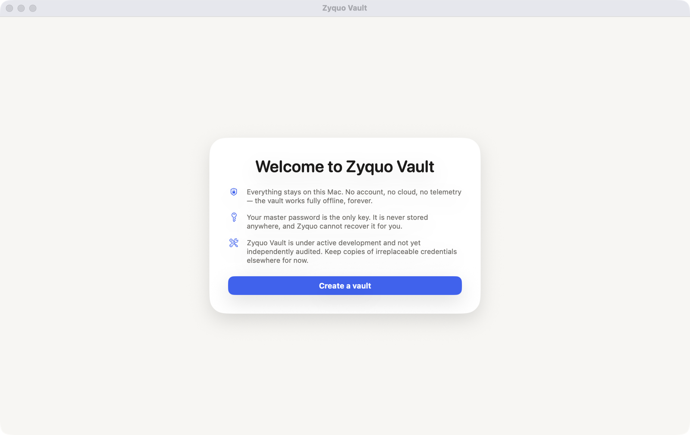
3Creating your vault
Click Create a vault. Creation is a short ceremony with one decision per screen, because the two decisions you make here — the master password and the recovery key — are the only things standing between your secrets and everyone else.
Step 1 — Name and master password
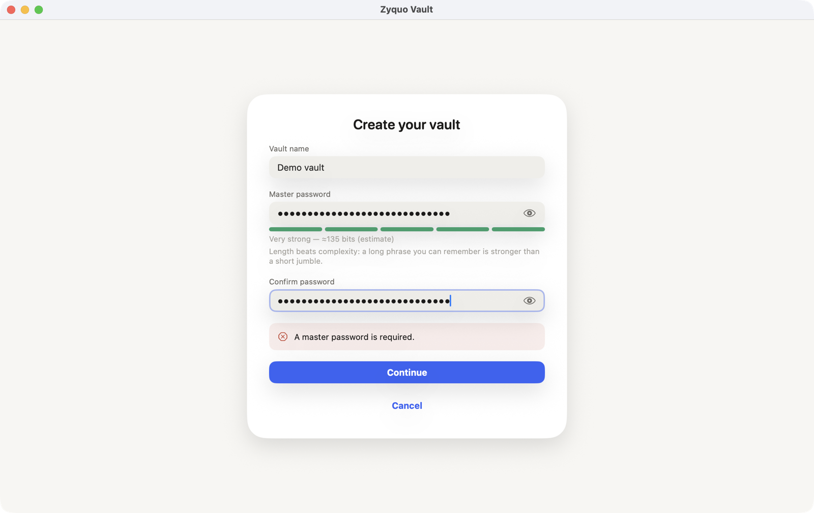
- Vault name is a friendly label shown on the lock screen. It is stored outside the encrypted vault (it has to be visible before you unlock), so don't put anything secret in it.
- Master password — length beats complexity. A phrase like
correct-horse-battery-staple-9is both stronger and easier to remember thanXk7!q. Zyquo imposes no arbitrary composition rules; the segmented meter and the bits estimate guide you instead. Use the eye toggle to double-check what you typed. - Both password fields must match before Continue proceeds.
Step 2 — Recovery decision
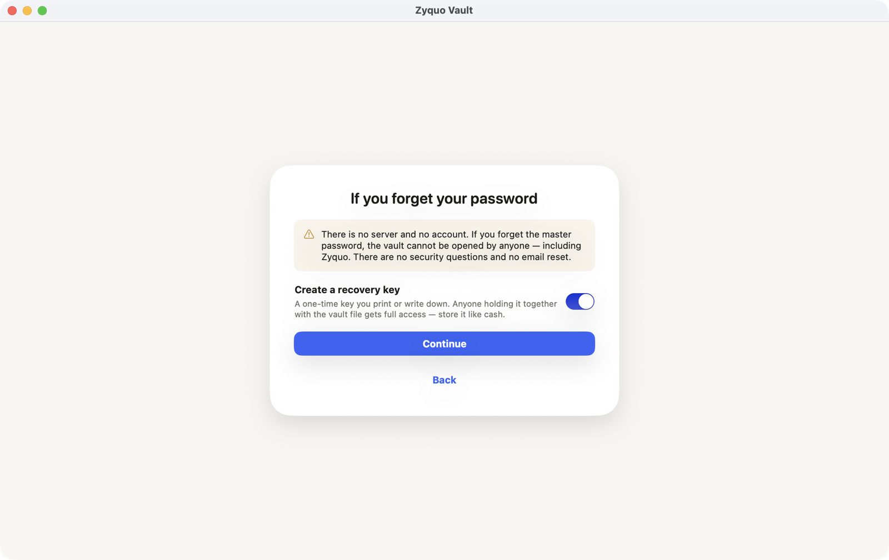
A recovery key is a second, independent way to open the vault if the password is ever forgotten. It is generated on your Mac, shown once, and never stored by Zyquo in any recoverable form. Anyone holding both the key and your vault files gets full access — treat the printed key like cash in a drawer.
Step 3 — The recovery-key ceremony
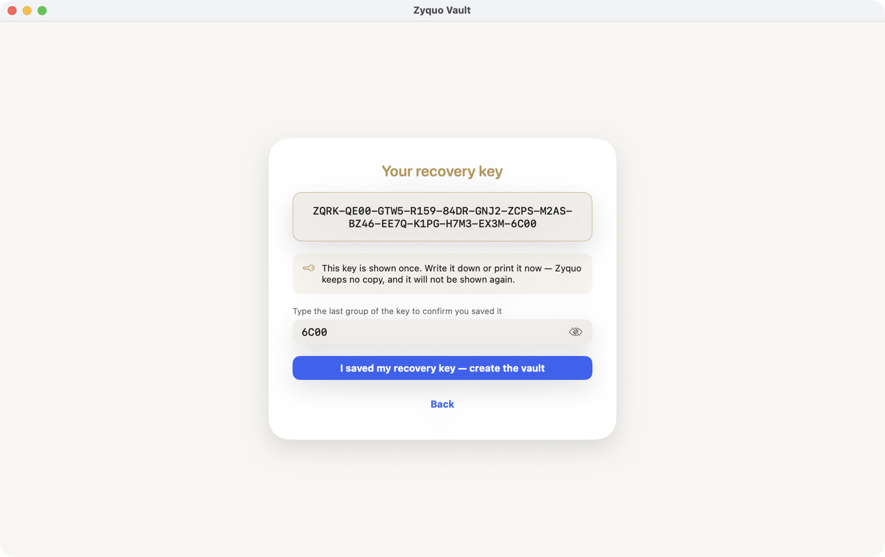
ZQRK. You must re-type the final group to prove you actually saved it.- Write the full key down on paper (or print the window with ⌘P via a screenshot). The characters exclude easily-confused glyphs (no I, L, O, U), and when you later type it back, Zyquo forgives
o→0andl→1misreadings, lowercase, and missing dashes. - Type the last 4-character group into the confirmation field. The button stays refused until it matches — a deliberate speed bump against "yeah yeah, saved it".
- Click I saved my recovery key — create the vault.
Zyquo then spends a few seconds calibrating: it benchmarks Argon2id on your specific machine and picks parameters so that unlocking costs about three-quarters of a second — heavy enough to make password-guessing brutal, light enough that you never notice. Finally it creates the vault, verifies it by actually reopening it, and drops you into the (empty) main window.
4The recovery key
| What it is | 32 random bytes, displayed once as ZQRK- + 13 groups of 4 characters. Mathematically as strong as the vault key itself. |
|---|---|
| What it opens | Only this vault. It keeps working after you change the master password. |
| Where to keep it | On paper, in a safe place, physically separate from the Mac. Not in a file on the same disk, not in another password manager entry that this vault protects. |
| Rotation | Settings → Rotate recovery key… issues a fresh key and immediately invalidates the old one (shown once, same ceremony). |
| If you decline | Nothing changes except honesty: forget the password and the vault is permanently unopenable. You can add a key later from Settings. |
5Unlocking & locking
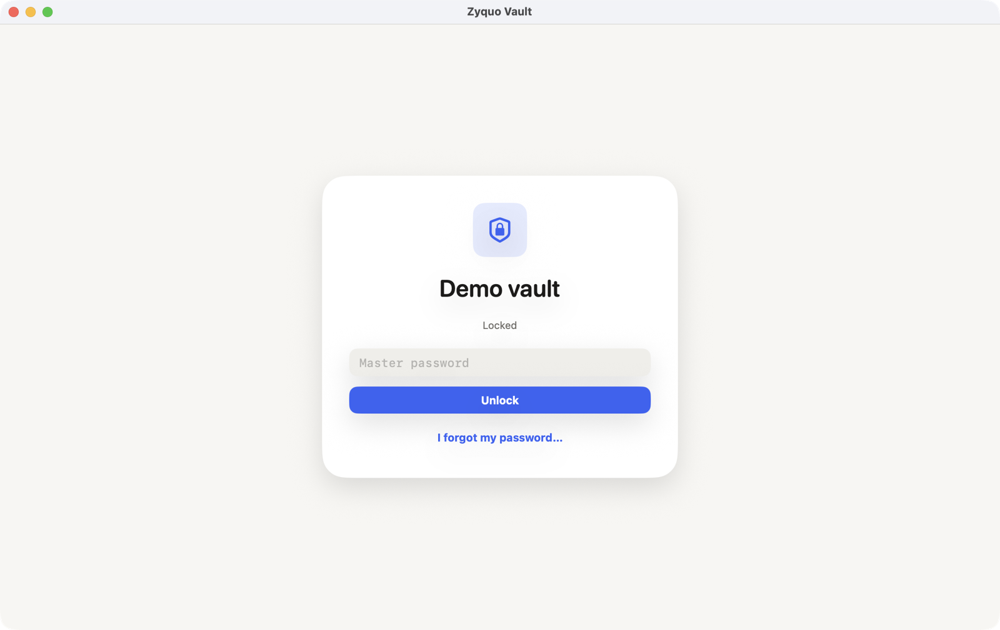
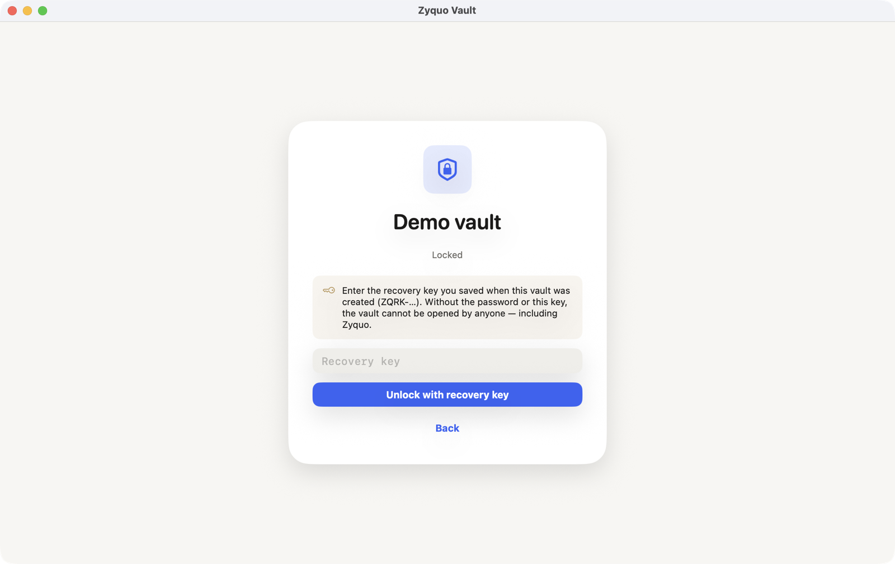
Unlocking
- Type the master password and press Return. A Caps Lock warning appears inline if the key is engaged.
- A wrong password shows one calm, deliberately ambiguous message — "The password is incorrect or the vault file is damaged" — because the cryptography genuinely cannot tell the difference, and neither should an attacker watching the screen.
- After three consecutive failures, Zyquo enforces a short in-app delay that doubles each further failure (capped at 30 s). This slows down someone typing at your keyboard; it is honestly documented as not affecting offline attacks against stolen files — that's the KDF's job.
- Forgot the password? Click I forgot my password… and enter the recovery key.
Locking — and what it really does
Locking is not cosmetic. When Zyquo locks, the encryption keys are erased from memory, decrypted attachment temp files are destroyed, anything the app put on the clipboard is cleared, and the in-memory search index is dropped. The lock screen appears because the keys are gone, not to hide them.
The vault locks automatically on:
| Trigger | Default | Configurable |
|---|---|---|
| Manual — ⌘L or the padlock button | — | — |
| Inactivity | 5 minutes | 1 min / 5 min / 15 min / 1 h |
| Mac goes to sleep | on | toggle |
| Screen locks / screensaver | on | toggle |
| App quits | always | — |
6The main window
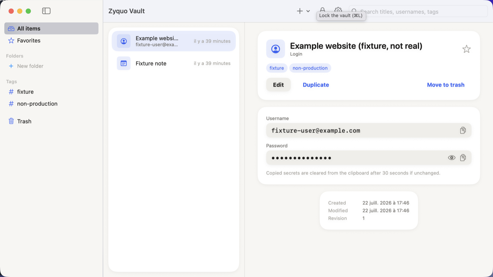
| Sidebar | All items, Favorites, your Folders (create one inline with + New folder), Tags (collected automatically from items), and the Trash with its count. Jump with ⌘1–⌘4. |
|---|---|
| Item list | Icon per type, title, subtitle (usually the username), relative modification time, and a gold star for favorites. Right-click any row for Favorite / Duplicate / Move to trash. |
| Detail | The selected item's header card (title, type, tags, favorite star, actions) followed by its fields, one-time code, notes, attachments, and metadata (created / modified / revision). |
| Toolbar | ＋ New item (menu of all nine types, ⌘N), padlock Lock (⌘L), gear Vault settings (⌘,), and the search field. |
7Managing items
Zyquo has nine item types, each with sensible starter fields: Login (username, password, website), Secure note, API credential, Software license, Payment card, Identity, SSH credential, One-time code, and Generic secret.
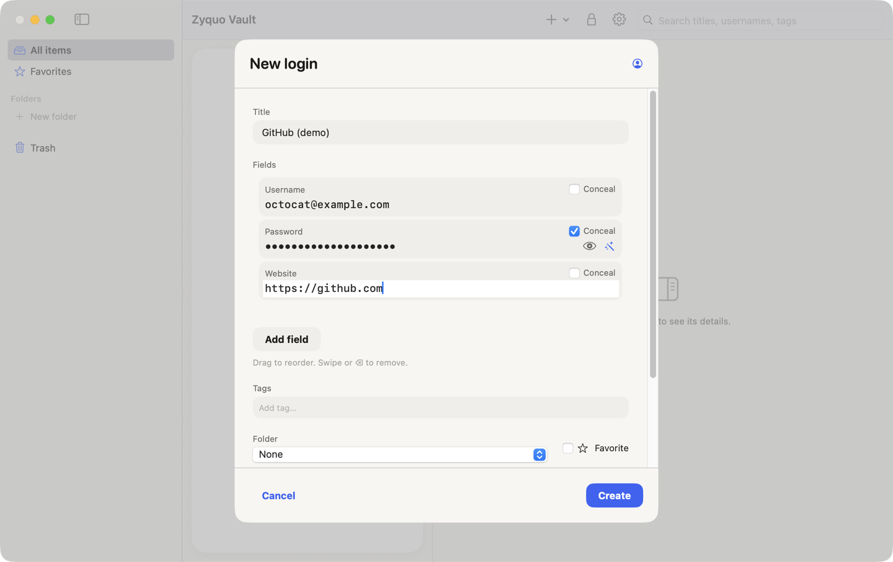
The editor
- Fields are fully dynamic. Every field has an editable label, a value, and a Conceal checkbox that decides whether it renders as dots and is treated as a secret. Add as many custom fields as you like with Add field; drag rows to reorder; swipe or press ⌫ to remove.
- Concealed values get an eye toggle for spot-checking and a wand button that opens the password generator (next section).
- Tags — type and press Return to add a pill; click a pill's ✕ to remove it. Tags appear automatically in the sidebar.
- Folder and Favorite live at the bottom, and notes accept Markdown (see §11).
- An unsaved-changes guard protects you: closing an edited item asks before discarding.
Item actions
From the detail header: Edit (⌘E), Duplicate (a full copy named "… copy", never marked favorite), Move to trash, and the star to toggle favorite. Each save bumps the item's revision counter, which you can see in the metadata card.
8Revealing & copying secrets
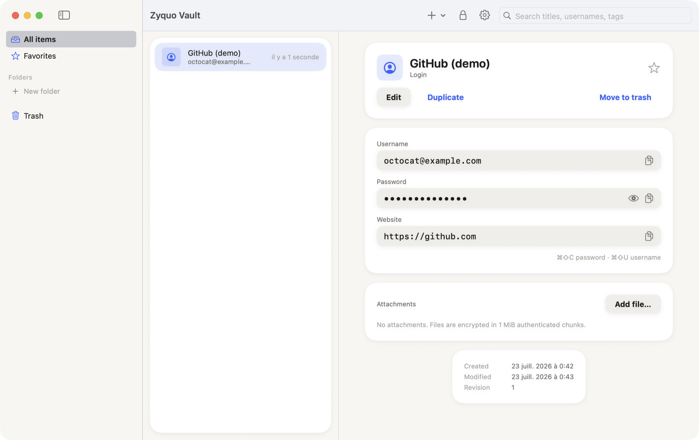
- One reveal at a time. Opening a second secret's eye automatically re-conceals the first — a small rule that prevents a screen full of exposed passwords during a screen-share.
- Copying uses the copy button next to each field (a transient Copied ✓ confirms). A small chip counts down — "Clears in 27 s" — and when it reaches zero Zyquo clears the clipboard only if it still holds the value Zyquo put there; anything you copied afterwards is left untouched. Locking clears an owned clipboard immediately, even with clearing set to "Never".
- Zyquo also marks its clipboard writes with the standard transient and concealed hints, which well-behaved clipboard managers respect — but third-party clipboard history apps that ignore those hints may still capture secrets. If you run one, configure it to honor concealed types.
- Shortcuts, no mouse needed: with an item selected — ⌘⇧C copies its password, ⌘⇧U its username, ⌘⇧T its current one-time code.
- Accessibility: concealed values are never exposed to VoiceOver or other assistive technologies until you explicitly reveal them.
9Password generator
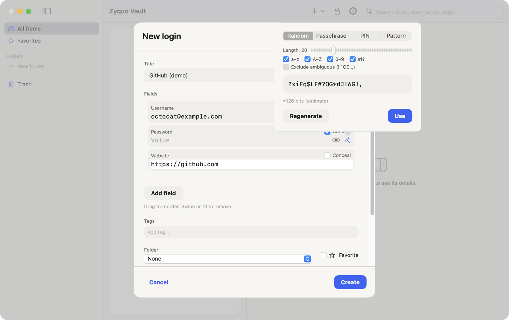
| Random | 8–64 characters from the classes you enable (a–z, A–Z, 0–9, symbols). At least one of every enabled class is guaranteed, at a randomized position. Exclude ambiguous drops look-alikes (Il1O0…) for passwords you might read aloud or retype. |
|---|---|
| Passphrase | 3–10 words from the EFF short wordlist (1,296 words ≈ 10.3 bits each), with dash / dot / space separators, optional capitalization, and an optional digit appended to one random word. |
| PIN | 4–12 digits. |
| Pattern | A template where a=lowercase, A=uppercase, 9=digit, #=symbol, x=any, and every other character is kept literally — e.g. Aaaa-9999-#aaa. |
All randomness comes from the system CSPRNG through rejection sampling, which guarantees every candidate is exactly equally likely (no modulo bias — this is tested). The bits number is always labeled an estimate: it measures the generator's search space, not any absolute promise. Click Regenerate until you like the result, then Use writes it into the field.
10One-time codes (TOTP)
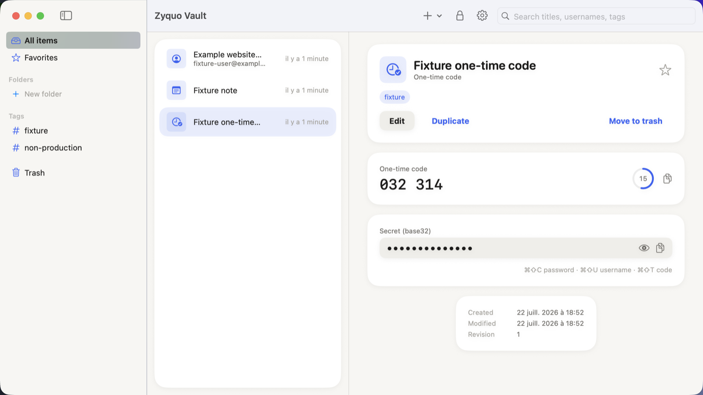
- Create a One-time code item (or add a field of kind totpSeed to any item) and paste the base32 secret the website shows during two-factor setup — the string behind "can't scan the QR code?".
- The detail view now shows the current 6-digit code, regenerated every 30 seconds, with a countdown ring. Copy it with the button or ⌘⇧T.
- Zyquo implements RFC 6238 with SHA-1/SHA-256/SHA-512 and 6 or 8 digits, and its output is validated against every official RFC test vector. Codes are computed on demand and never stored or logged; the seed is encrypted like any other secret.
11Markdown notes
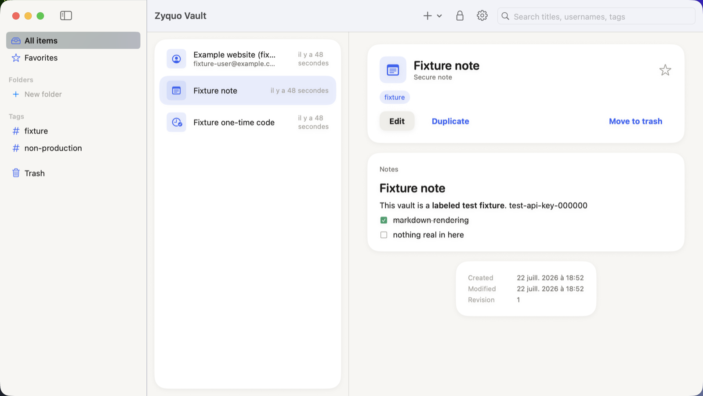
The notes area of every item accepts Markdown: # headings, **bold** / *italic*, bullet and numbered lists, - [ ] checklists, > quotes, fenced ``` code blocks, and --- rules. Rendering is pure native text — no HTML engine, no scripts, no network fetches, no image loading exist in the code at all, so a hostile note is just… text. Links render styled but are never auto-opened.
12Attachments
- In an item's Attachments card, click Add file… and pick any file. It is encrypted immediately in streamed 1 MiB authenticated chunks — large files never sit whole in memory — and each chunk is cryptographically bound to its exact position, so tampered, truncated, or reordered attachment files are detected and refused.
- Open decrypts to a protected temporary file (readable only by you) and hands it to the default app. That temp file is destroyed when the vault locks, when the app quits, and swept at the next launch if the app ever crashed.
- Remove deletes the encrypted file and its key reference.
13Search
Press ⌘F or click the search field. Matching is instant and word-based: github work finds items matching both terms across titles, usernames, URL hostnames, tags, and field labels.
What search deliberately never indexes: passwords, one-time-code seeds, or any concealed value — provably (there's a test asserting a secret string is absent from the index). The index lives only in memory while the vault is unlocked, is rebuilt on unlock, and is discarded on lock. Nothing about it ever touches the disk, and vault items are not fed to Spotlight.
14Trash & deletion
- Move to trash keeps the item fully encrypted and restorable — it just moves scope. The sidebar shows the trash count.
- In the Trash scope, each item offers Restore and Delete permanently; the list header offers Empty trash.
- Permanent deletion removes the ciphertext and the wrapped key that could ever decrypt it. The app is honest about physics: on SSDs (wear-leveling) and in older backups, encrypted traces may persist — which is precisely why encryption plus key destruction, not disk scrubbing, is the real control.
15Backups & restore
- Automatic: once per day, on unlock, in the background.
- Manual: Settings → Back up now.
- Every backup is a snapshot of the encrypted vault (header, manifest, records, attachments) plus integrity digests. A backup does not count until it verifies: Zyquo re-checks every digest and re-authenticates every record and attachment in the copy, and deletes it if anything fails.
- Retention keeps the last 10 backups, plus one per day for a week, plus one per week for a month; older ones are pruned automatically.
- Restore… never touches your active vault. It materializes the backup as a separate vault which then appears on the lock screen; it opens with the master password (and recovery key) that were valid when the backup was taken.
16Import & export
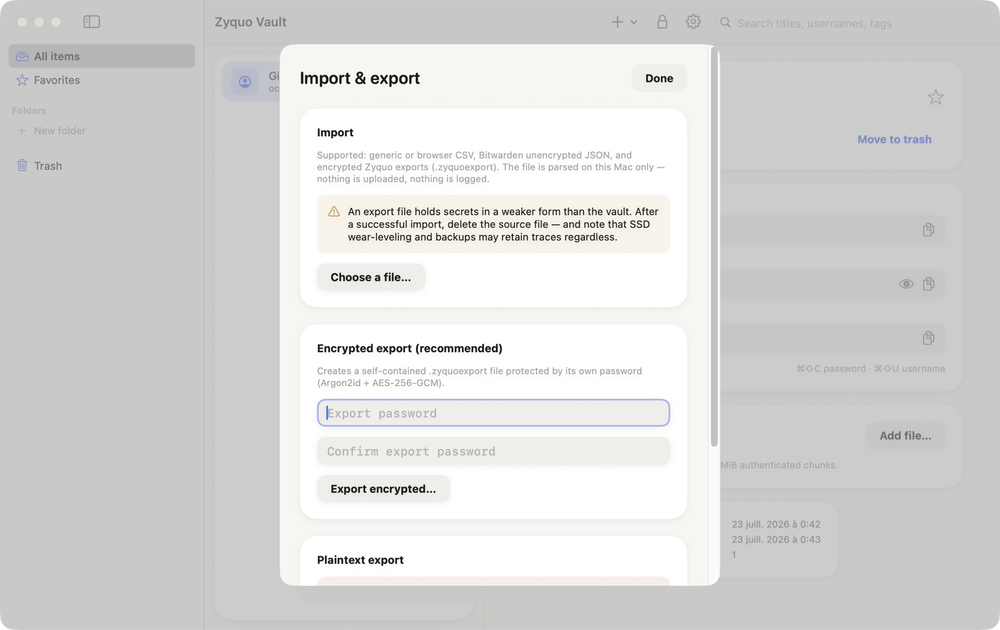
Importing
- Export from your current manager: Bitwarden → unencrypted .json; Chrome / Edge / Firefox / Safari → passwords CSV; anything else → a CSV with a header row containing at least a password column (title/username/url/notes/totp/tags columns are recognized under many common names). Encrypted
.zyquoexportfiles from another Zyquo vault work too — you'll be asked for their password. - Click Choose a file…. Zyquo parses locally, then shows a preview: item counts by type, folders to be created, and likely duplicates (same type + title + username as an existing item) with a skip toggle.
- Click Import. When it finishes, delete the source file — it holds your secrets in a far weaker form than the vault, and the app reminds you that SSDs and backups may retain traces of it regardless.
Exporting
- Encrypted export (recommended): a single
.zyquoexportfile protected by its own password (Argon2id + AES-256-GCM). Safe to move between machines or keep off-site; importable by any Zyquo Vault. - Plaintext export (JSON or CSV): deliberately inconvenient. You must type
EXPORTto arm the buttons, the warnings are unmissable, and the resulting file announces itself as unencrypted. Use it only for one-shot migrations, then delete it.
17Settings reference
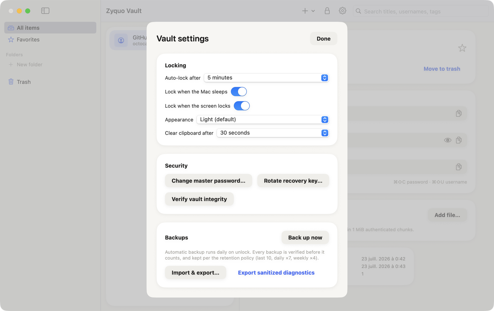
| Locking | |
|---|---|
| Auto-lock after | 1 min · 5 min (default) · 15 min · 1 h of inactivity |
| Lock when the Mac sleeps | on by default |
| Lock when the screen locks | on by default |
| Appearance | Light (default) · Dark · System |
| Clear clipboard after | 10 s · 30 s (default) · 1 min · 2 min · Never (locking still clears) |
| Security | |
| Change master password… | Re-verifies the current password, then re-protects the vault key under the new one. Your data is not re-encrypted (nothing to wait for), and the recovery key keeps working. |
| Rotate recovery key… | Issues a fresh ZQRK-… key (shown once) and invalidates the previous one. |
| Verify vault integrity | Re-authenticates every record and attachment on disk and reports any missing, corrupted, or unexpected file. |
| Backups | |
| Back up now / list / Restore… | See §15. |
| Import & export… | See §16. |
| Export sanitized diagnostics | Writes a small text report (versions, KDF parameters, integrity counts — never any secret) you can attach to a bug report. |
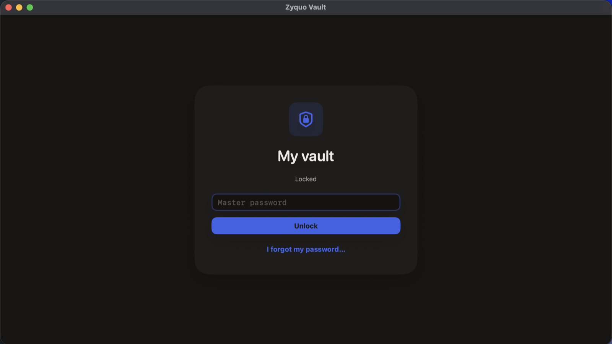
18Keyboard shortcuts
| Shortcut | Action |
|---|---|
| ⌘N | New item (opens the type menu) |
| ⌘F | Focus search |
| ⌘L | Lock the vault |
| ⌘, | Vault settings |
| ⌘E | Edit the selected item |
| ⌘S | Save (in the editor) |
| ⌘1 / ⌘2 / ⌘3 / ⌘4 | All items · Favorites · Trash · first folder |
| ⌘⇧C | Copy the selected item's password |
| ⌘⇧U | Copy the selected item's username |
| ⌘⇧T | Copy the selected item's current one-time code |
| Esc | Cancel a sheet (guarded if you have unsaved changes) |
19Command-line tool
zyquo-vault-cli ships alongside the app (and in dist/ when building from source). It exposes safe commands only — nothing that prints a secret — and never accepts the master password as an argument (it would be visible in the process list); it prompts with echo off, or reads stdin when piped.
# Non-secret metadata: UUID, format version, KDF parameters
zyquo-vault-cli vault info ~/path/to/vault
# Full cryptographic verification of every record and attachment
zyquo-vault-cli vault verify ~/path/to/vault
# Create + verify a backup, then apply the retention policy
zyquo-vault-cli vault backup ~/path/to/vault
# Describe the on-disk format
zyquo-vault-cli format describe20Where your data lives
The released (sandboxed) app stores vaults at:
~/Library/Containers/dev.zyquo.vault/Data/Library/Application Support/Zyquo Vault/vaults/<vault-id>/
├── vault.header # identity, KDF parameters, wrapped master key
├── vault.manifest # encrypted inventory (names & counts are ciphertext)
├── records/ # one authenticated file per item
├── attachments/ # chunk-encrypted files
├── backups/ # verified snapshots
└── journal/ # crash-safety transaction log (no secrets)Every file is encrypted and authenticated; directory permissions are locked to your user (0700/0600) and checked at startup. The complete byte-level format is documented in vault-format.md — deliberately, so independent tools and auditors can read a vault without trusting this app. (Development builds run unsandboxed and use ~/Library/Application Support/Zyquo Vault/ directly — the two locations are separate.)
21FAQ & troubleshooting
"The password is incorrect or the vault file is damaged."
Nine times out of ten: Caps Lock, keyboard layout, or a trailing space. The message is intentionally vague (see §5). If you're certain the password is right, run zyquo-vault-cli vault verify — it distinguishes structural damage — and if damage is confirmed, restore from a backup (§15).
"Too many attempts. Try again in N s."
The in-app rate limiter after repeated wrong passwords. Wait out the delay; it resets on success.
"The vault is in use by process N."
Another Zyquo process holds the vault's lock — usually a second copy of the app. Quit it. If it crashed, the stale lock is reclaimed automatically once that process is provably gone; a lock file is never deleted just because it exists.
The vault locked itself while I was reading something.
That's the inactivity auto-lock (default 5 minutes). Raise it in Settings — or accept the nudge; it exists for the laptop left open in a café.
Can I sync between two Macs?
Not in v1 by design — no sync code means no sync bugs and no server trust. The supported pattern is an encrypted export (§16) carried to the other machine. Putting a live vault in a cloud-synced folder is not supported: concurrent access from two machines can conflict.
Does it work with Touch ID?
Not for unlocking after a restart — that would require storing key material in the Apple Keychain, which this app categorically refuses to do. (A future option may re-authorize an already-unlocked session biometrically; it will never survive a reboot, and the app will say so.)
Where do I report a bug or a vulnerability?
Bugs: GitHub issues (attach a sanitized diagnostics export, never a vault file). Vulnerabilities: privately, per SECURITY.md.
22Honest limitations
- No independent audit yet. The format and cryptography documentation exist specifically to make one possible. Until then, keep irreplaceable credentials duplicated elsewhere.
- An unlocked session trusts your Mac. Malware running as you, with the vault unlocked, can read what you can read. Zyquo's job is protecting data at rest and failing closed; it cannot defend a compromised live machine.
- Forgotten password + lost recovery key = permanent loss. By design; there is no backdoor to abuse.
- Memory erasure is best-effort. Keys are zeroed aggressively, but Swift (like every high-level language) can leave transient copies the app can't reach. Documented, not hidden.
- Deleted ≠ physically erased. SSD wear-leveling and old backups can retain encrypted traces. Key destruction is the effective control.